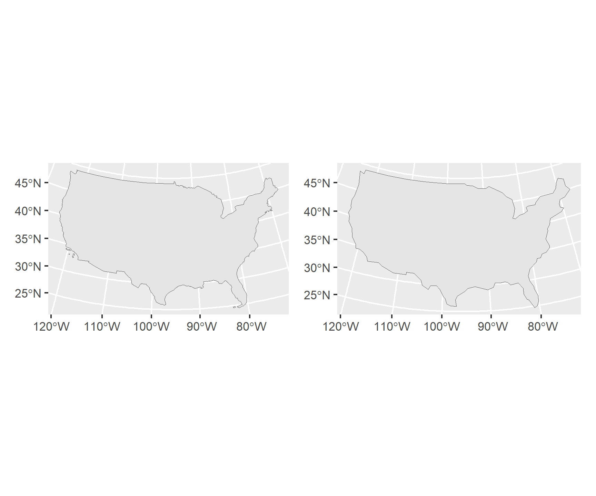

Code
# Step 1.1: Getting sf object of counties, transforming
counties <- AOI::aoi_get(state = "conus", county = "all") %>%
st_transform(crs = 5070)
# Step 1.2: Generating county centroids, combining to MULTIPOINT feature
centroids <- st_centroid(counties) %>%
st_union()
# Step 1.3: Tessellations/Coverages
## Voronoi Tessellation
v_tess <- st_voronoi(centroids) %>%
st_cast() %>%
st_as_sf() %>%
mutate(id = 1:n())
## Triangulated Tessellation
t_tess <- st_triangulate(centroids) %>%
st_cast() %>%
st_as_sf() %>%
mutate(id = 1:n())
## Gridded Coverage
grid <- st_make_grid(counties, n = 70) %>%
st_cast() %>%
st_as_sf() %>%
mutate(id = 1:n())
## Hexagonal Coverage
hex <- st_make_grid(counties, n = 70, square = FALSE) %>%
st_cast() %>%
st_as_sf() %>%
mutate(id = 1:n())
# Step 1.4: Unioning county boundaries to get geometry of CONUS
conus <- st_union(counties)
# Step 1.5: Simplifying CONUS border, cropping tessellations
## removing 95%, 99% of points
conus5 <- ms_simplify(conus, keep = 0.05)
conus1 <- ms_simplify(conus, keep = 0.01)
## plotting
c5 <- ggplot() +
geom_sf(data = conus5)
c1 <- ggplot() +
geom_sf(data = conus1)
library(patchwork)
c5 + c1
Code
## for this project, I'm comfortable with removing 99% of the points because this greatly simplifies the coastal borders without removing any of the county information (only island counties are in AK and HI) and will make computationally easier to crop the tessellations to the CONUS border.
## Reporting number of points
mapview::npts(conus)[1] 11292Code
mapview::npts(conus1)[1] 114